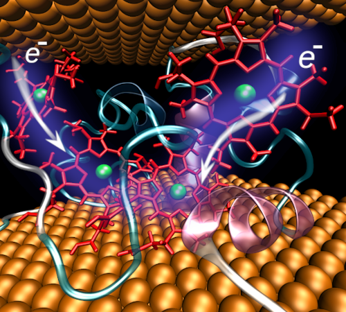
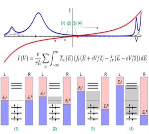
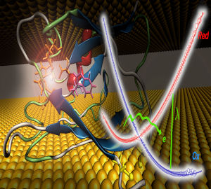
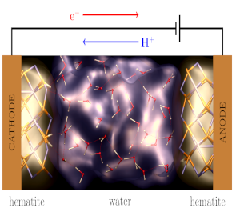
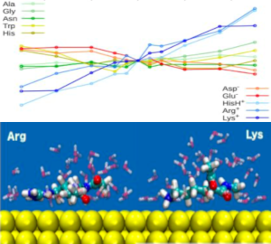
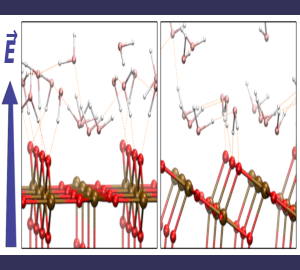

We are a group of scientists and students working together to investigate various molecular systems and processes using computer simulation methods. We work at Deparment of Physics, Faculty of Science, University of South Bohemia in České Budějovice and our mission is to conduct cutting-edge research, promote collaboration, and contribute to the scientific community.
Our group focuses mainly on the investigation of charge transfer phenomena in biomolecular systems. Besides, we are interested in the electric field effects on heterogeneous interafces between biomolecules at solid surfaces and behavior of other redox molecular systems.
Although electrons in biomolecules are typically transferred by a hopping mechanism, "jumping" through the sequence of available redox sites, when peptides or proteins are incorporated between two metal contacts and form a junction, the transport mechanism changes to coherent tunneling. This drastic change is caused by interactions between metallic and biomolecular electronic states and their mutual positions.
We investigate these phenomena by a combination of classical molecular dynamics (MD) simulations, hybrid quantum-mechanical/molecular-mechanical (QM/MM) methods, and density functional theory (DFT) calculations.
|  |  |  |
| Small Tetraheme Cytochrome (STC) junction | Coherent tunneling description | Azurin junction |
| Futera, Z., Ide, I., Kayser, B., Garg, K., Jiang, X., van Wonderen, J. H., Butt, J. N., Ishii, H., Pecht, I., Sheves, M., Cahen, D., Blumberger, J.: Coherent Electron Transport across a 3 nm Bioelectronic Junction Made of Multi-Heme Proteins. J. Phys. Chem. Lett. 11, 9766 (2020) DOI: 10.1021/acs.jpclett.0c02686 | |
| Futera, Z.: Amino-Acid Interactions with the Au(111) Surface: Adsorption, Band Alignment, and Interfacial Electronic Coupling. Phys. Chem. Chem. Phys. 23, 10257 (2021) DOI: 10.1039/d1cp00218j | |
| Kontkanen, O. V., Biriukov, D., Futera, Z.: Reorganization Free Energy of Copper Proteins in Solution, in Vacuum, and on Metal Surfaces. J. Chem. Phys. 156, 175101 (2022) DOI: 10.1063/5.0085141 | |
| Kontkanen, O. V., Biriukov, D., Futera, Z.: Applicability of Perturbed Matrix Method for Charge Transfer Studies at Bio/Metallic Interfaces: A Case of Azurin Phys. Chem. Chem. Phys. 25, 12479 (2023) DOI: 10.1039/d3cp00197k | |
| Futera, Z., Wu, X., Blumberger, J.: Tunneling-to-Hopping Transition in Multiheme Cytochrome Bioelectronic Junctions. J. Phys. Chem. Lett. 14, 445-452 (2023) DOI: 10.1021/acs.jpclett.2c03361 |
Bio/metallic interfaces, when studied by electrochemical methods like protein film voltammetry (PFV) or electrochemical scanning tunneling microscopy (EC-STM), are affected by the applied potentials and electric fields, which are always present in these measurements. However, such fields can distort the studied biomolecular structures on the interfaces with the electrodes, perturb their electronic properties, and, consequently, affect the probed potential-current (I-V) curves.
Stronger electric fields or catalytic activity of the electrode surfaces can induce chemical reactions, for example, water splitting. We investigate these effects by non-equilibrium molecular dynamics (NEMD) techniques either at the classical or quantum level of theory using force fields (FF) or density functional theory (DFT), respectively.
|  |  |  |
| Hematite/water electrochemical cell | Field response of adsorbed amino acids | Aqueous titania/water interfaces |
| Futera, Z., English, N. J.: Electric-Field Effects on Adsorbed-Water Structural and Dynamical Properties of Rutile- and Anatase-TiO2 Surfaces. J. Phys. Chem. C 120, 19603 (2016) DOI: 10.1021/acs.jpcc.0b01907 | |
| Futera, Z., English, N. J.: Oscillating Electric-Fiel Effects on Adsorbed-Water at Rutile- and Anatase-TiO2 Surfaces. J. Chem. Phys. 145, 204706 (2016) DOI: 10.1063/1.4967520 | |
| Biriukov, D., Futera, Z.: Adsorption of Amino Acids at the Gold/Aqueous Interface: Effect of an External Electric Field. J. Phys. Chem. C 125, 7856 (2021) DOI: 10.1021/acs.jpcc.0c11248 | |
| Futera, Z., English, N. J.: Water Breakup at Fe2O3 - Hematite/Water Interfaces: Influence of External Electric Fields from Nonequilibrium Ab Initio Molecular Dynamics J. Phys. Chem. Lett. 12, 6818 (2021) DOI: 10.1021/acs.jpclett.1c01479 |
Former members:
University of South Bohemia
Faculty of Science
Department of Physics
Branišovská 1780
370 007 České Budějovice
Czech Republic
E-mail: zfutera@prf.jcu.cz
Phone: +420 389 036 260